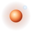

Scan your card
Tap your card and interact with the small sensor. It keeps an eye on your pulse, temperature and movement, and on the air around you, so you don't have to.

AstroMed Open console →NASA SPACE APPS 2026 · TEAM ANTARES
AstroMed pairs a body sensor with a guided daily check and an explainable rule engine. Every alert says why it fired and what to do next.
HOW IT HELPS YOU
Tap your card and interact with the small sensor. It keeps an eye on your pulse, temperature and movement, and on the air around you, so you don't have to.
Every part of your body gets a colour: green means all good. If something changes, you'll see why in plain words. One odd reading won't set off an alarm.
Simple tips for right now, how you're doing over the days, and a short note ready to share with your doctor back on Earth.
CREW HEALTH CONSOLE